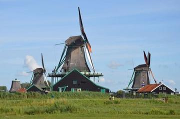
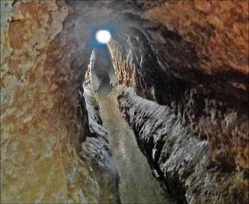

River Valleys and First Cities 2

Windmill Miller
Netherlands +3 · Puzzles and mind gamesNardi
Armenia +3 · Board and table games
Classical Worlds 1
Chogan
Iran · Street and playground games
Modern Heritage 4

Astrolabe: reading the sky
Iran · Toys
Qanat Water Tunnels
Iran · Puzzles and mind games
Zurkhaneh strength rhythm
Iran · Dexterity and skill gamesFlower or Empty
Iran · Street and playground games
Living Traditions 8

Badgir windcatcher cooling puzzle
Iran · Crafts and making
Bayt-bazi: verse chain
Iran · Performance and storytelling
Khatam inlay star pattern workshop
Iran · Crafts and making
Muqarnas stalactite vault builder
Iran · Crafts and making
Persian Carpet Knotting
Iran +1 · Crafts and making
Persian garden layout puzzle
Iran · Crafts and making
Santur Hammer Strings
Iran +3 · Musical instruments
Tombak goblet drum rhythms
Iran · Musical instruments